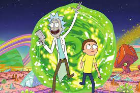

-
Dr. Stone
- ciencia
- aventura
Conta a historia de Senku, que renasce 3.700 anos depois que uma luz misteriosa petrificou toda a humanidade. Usando todo seu conhecimento cientifico, ele tenta restaurar a humaninade.
-
mick and morty
- ficcao
- comedia
o trama gira em torno das aventuras perigosas de rick, um cientista genio alcoolatra, e morty, seu neto ingenuo, que gracas as suas viagens interdimensionais com seu avo comeca a perceber o quao complexo o mudo pode ser.
-
death note
- misterio
- suspense
um estudante encontra um caderno que caiu do ceu. trata-se do Death Note, que permite ao seu suportador matar qualquer pessoa a partir da mera anotacao do nome do alvo em uma de suas paginas.
. -
demom slayer
- misterio
- demonios
a historia conta sobre um jovem que vendia carvao ate descobrir que sua familia foi massacrada por um demonio, restando apenas sua irma, que foi infectada e esta se tornando um monstro. O protagonista, decide virar um cacador de demonios em buscar de vingnca.
-
jujutsu kaisen
- sobrenatural
- fantasia
Um estudante do ensino medio engole um talisma amaldicoado, o dedo de um demonio, e fica possuido. Ele e condenado a morte por feiticeiros de jujutsu, mas antes que isso aconteca, ele e encarregado de encontrar e consumir os dedos retantes da maldicao.
-
one piece
- aventura
- comedia
o anime foca em Luffy,um jovem de borracha, que, inspirado em seu idolo de infancia, o poderoso pirata, o Ruivo, parte em uma jornada para encontar o tesouro mitico, o One Piece, e proclamar-se o rei dos piratas.
-
attack on titan
- acao
- aventura
Para escapar dos titans, gigantes e devoradores de humanos, a humnidade se refugiou em cidades cercadas por enormes muralhas. Quando eles voltam a atacar, Eren se junta a luta para combater as criaturas.
-
one punch man
- acao
- comedia
Conta a historia de Saitama, um super-heroi extremamente poderoso, que se entediou com a ausencia dos desafios nas suas lutas contra o mal e procura encontrar um oponente digno.
-
spy x family
- acao
- comedia
O espiao twilight e instruido a construir uma familia para se infiltrar em uma tradicional instituicao de ensino. Mas a filha q ele encontra e uma paranormal que le mentes, e a esposa e uma assassina.
-
pokemon
- fantasia
- aventura
Ash tem o sonho de ser um mestre de pokemons. Ele conta com o seu primeiro pokemon, um pikachu, que na convivencia diaria acaba se tornando um grande amigo do garoto. Com a ajuda de outros amigos, Ash parte na jornada ate a almejada Liga Pokemon.